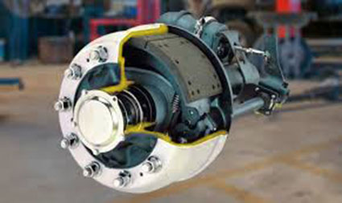

El sistema de frenos de un coche se encarga de reducir la velocidad de este de manera segura. Al igual que ocurre con los demás sistemas de los coches modernos, se ha ido mejorando progresivamente hasta llegar al avanzado nivel de desarrollo actual.
Porque FRENAR es importante para tu vida, en CUSTOMCARS te recomendamos que periódicamente le realices un chequeo exaustivo, y de ser necesario reemplaces todos los componentes que sean necesarios.